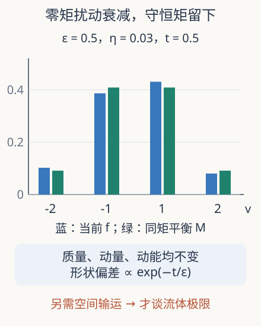

本页目录
动力学极限 03 · 流体从哪里来：局部平衡、守恒矩与极限顺序
已有 Boltzmann 方程，为什么还不能直接把速度变量删掉，宣布得到 Navier–Stokes？先修碰撞与熵。本讲推导守恒矩和局部平衡的作用，再区分形式展开、可解课堂模型与严格极限定理。
1. 流体变量是速度分布的几个矩
设分子质量与气体常数已归一化。给定 \(f(t,x,v)\)，质量密度、平均速度与温度由
定义。\(u\) 是整体流速，\(v-u\) 是热运动；把二者混在一起，会把均匀移动的气体误判成更热。它们有单位，在本讲实验中均通过参考速度、时间和质量归一化。
对 Boltzmann 方程乘 \(1\) 和 \(v\) 再积分，碰撞不变量消去右端，得到
问题没有消失：第二式的通量是二阶矩，而我们的未知量只有 \(\rho,u,T\)。恒等式
把剩余未知写成压力张量。一般分布可以有各向异性；不能直接用一个标量温度替代整个张量。
2. 局部 Maxwell 分布为什么能闭合
若在每个 \((t,x)\)，速度分布确为
中心 Gaussian 的不同坐标交叉矩为零、每个坐标方差为 \(T\)，所以 \(\mathsf P=\rho TI\)，中心三阶热通量为零。代入守恒矩，得到可压缩 Euler 的形式闭合。注意“局部 Maxwell”允许参数随空间变化，通常并不是完整动力学方程的精确解：输运会把它拉离局部平衡。
若碰撞时间远小于宏观输运时间，快速碰撞会持续把形状拉回平衡附近。Knudsen 数 \(\mathrm{Kn}\) 是平均自由程与宏观长度之比，小 Kn 描述频繁碰撞的尺度。离平衡的一阶修正携带剪切应力与热通量，才会带来黏性和热传导；直接令 \(f=M\) 会把这些效应一起删掉。

3. 一个不破坏守恒的可算松弛模型
先去掉空间变量，只保留四个速度 \(v=(-2,-1,1,2)\)。定义平衡概率 \(M_i=e^{-v_i^2/2}/Z\)，其中 \(Z=2(e^{-2}+e^{-1/2})\)。设
逐项核对 \(\sum c_i=0\)、\(\sum v_ic_i=0\)、\(\sum v_i^2c_i=0\)。所以改变 \(\eta\) 会改变形状，却保持质量、动量和动能。限定 \(|\eta|\le0.04\) 保证四个概率均正。只用三个速度并同时固定这三个矩，通常没有剩余自由度；那样的实验根本看不到非平衡松弛。
采用齐次 BGK 型方程 \(\dot f_i=(M_i-f_i)/\varepsilon\)，\(\varepsilon>0\) 为松弛时间，解为
它也是 \(e^{-t/\varepsilon}f_i(0)+(1-e^{-t/\varepsilon})M_i\)，所以正性来自两个正分布的凸组合。三个矩一直不变，但 \(L^1\) 偏差为 \(6|\eta|e^{-t/\varepsilon}\)，明显衰减。这是守恒与松弛可以同时发生的具体机制。
4. 熵能检查什么，不能检查什么
定义离散相对熵 \(H(f\mid M)=\sum_i f_i\log(f_i/M_i)\)。质量相等使导数中的常数项抵消：
每项的符号已足够证明不增；不必期待浮点数恰好每次输出相同小数位。由于 \(\log M_i\) 是常数加 \(v_i^2\) 的倍数，固定质量和能量时，最小化这个相对熵也就是最大化离散物理熵。这里平衡由模型预先指定，尚无空间中的动量交换。
当固定 \(t>0\) 再令 \(\varepsilon\to0\)，扰动消失；在 \(t=0\) 它却仍为原值。因此收敛一般不在包含零时刻的整个时间区间上一致。长度约 \(\varepsilon\) 的初始层揭示了“碰撞非常快”与“从初时刻就等于平衡”的差别。如果同时取 \(t=c\varepsilon\)，剩余比例是 \(e^{-c}\)，而不是零。
5. 从这一步到严格流体极限
形式上，不可压缩扩散尺度常写作
并让分布是全局 Maxwell 附近量级 \(\varepsilon\) 的扰动。质量方程除以正确量级后，最低阶约束给 \(\nabla\cdot u=0\)；动量通量更高阶才保留惯性与黏性。严格证明要控制余项、紧性、非线性乘积与初始声波，不能只逐幂次配平。
2025 年 Deng–Hani–Ma 将二维、三维环面上的稀薄硬球推导与流体极限结合。其 Navier–Stokes–Fourier 结论使用准备好的近 Maxwell 初值，固定满足相应条件的光滑流体解及其时间区间，并协调球径、流体尺度和误差界。定理不是对任意有限粒子数的精确等式，也没有证明三维 Navier–Stokes 任意光滑初值永远光滑。
2009 年 Golse–Saint-Raymond 的另一条路线在所规定碰撞核、熵估计和尺度下得到弱流体极限。弱解构造与光滑解长期存在是不同验收目标。阅读研究时应先识别空间、初值类、拓扑与时间范围，再判断“从牛顿到流体”这一标题覆盖多大范围。
用两个时钟检查初始层
若比较不同 ε 的分布，必须先决定是在同一个宏观时间比较，还是在相同碰撞次数尺度比较。固定 \(t\) 时，ε 越小，已经历的松弛次数 \(t/\varepsilon\) 越大；若固定 \(t/\varepsilon=1\)，所有曲线都保留相同的 \(e^{-1}\) 扰动比例。两种图会给出不同视觉印象，却没有数学矛盾。
本实验还允许把 η 改为相反数。三个守恒量保持原值，偏差的绝对值也相同，但四个速度格的形状互换。相对熵不是逐格偏差的带符号和，因此不能靠正负抵消使它为零；对正分布，只有完全等于 M 时才达到零。这种检查可以区分“总误差抵消”与“分布确实接近平衡”。
空间问题多了一层困难：即使每处都接近平衡，平衡参数的空间梯度仍会产生非平衡修正。我们需要同时知道偏离有多小、梯度有多大和观测时间有多长，才能判断黏性修正是否应该保留。
6. 实验与迁移
先预测改变 ε 会不会改变三个守恒矩，再同时调时间与初始扰动。图中只画四个离散速度格，连线不表示新增速度。
默认静态结果：\(\varepsilon=0.5,\eta=0.03,t=0.5\)。分布约为 \((0.10224915,0.38671447,0.43086000,0.08017638)\)；质量 1，动量 0，动能 0.773638286；\(L^1\) 偏差 0.066218299，相对熵 0.002531051。
题一。 把初始扰动换成 \(\eta(1,0,0,0)\)，却仍松弛到原 \(M\)，会破坏什么？
独立作答后核对
初始质量变成 \(1+\eta\)，动量改变 \(-2\eta\)，动能改变 \(2\eta\)；松弛到原 \(M\) 会让这些矩随时间改变。若目标是保守 BGK，需要根据当前守恒矩选匹配的平衡，而不能任意固定目标。
题二。 固定 \(\eta\ne0\)，比较先取 \(t\to0^+\) 再取 \(\varepsilon\to0\)，与相反顺序的偏差极限。
独立作答后核对
先取时间到零得到 \(6|\eta|\)，再取 ε 不变；先固定正时间让 ε 到零得到 0，再让时间到零仍为 0。两个次序不同，表明初始层需要专门估计，不能任意交换极限。
速查与来源
| 步骤 | 可得到什么 | 仍需什么 |
|---|---|---|
| 守恒矩 | 质量、动量方程 | 通量闭合 |
| 局部 Maxwell | Euler 形式通量 | 误差控制与尺度 |
| 齐次 BGK | 零矩扰动指数衰减 | 不含空间黏性 |
下一讲：弱非线性波的动力学。实际访问 2026-09-08：Golse，2005 作者综述；Golse–Saint-Raymond，硬截断势的不可压 Navier–Stokes 极限，2009；Deng–Hani–Ma，2025-03-03，定理 1–3 与初值条件。经典定理与近期推导在此分开标注。